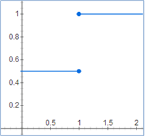
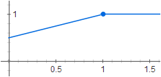
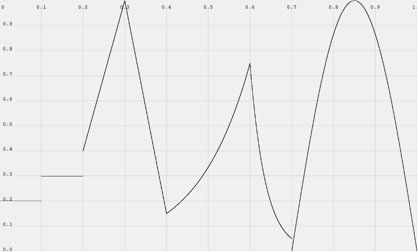

3-2-3. AudioParam 数值调节器
AudioParam 不是 Node，而是一个很有用的类。
某些 Node 的数值型参数可采用 AudioParam 记录数值。
AudioParam 不仅可以直接给 value 一个固定值，而且能让数值产生渐变效果，例如让音量从高慢慢变低，产生淡出效果。
AudioParam.value
value = [number]
- 直接改数值。
例：
gainNode.gain.value = 0.5;
AudioParam.setValueAtTime()
setValueAtTime(value, startTime)
- 在指定时间把数值改成指定值。
- value: 指定值。
- startTime: 指定时间。
例：
gainNode.gain.setValueAtTime(0.5, ctx.currentTime + 0);
gainNode.gain.setValueAtTime(1.0, ctx.currentTime + 1);
上述代码将在0秒处设置关键帧，音量为0.5。然后在1秒处设置关键帧，音量为1.0。
音量与时间的关系如下图所示：

AudioParam.linearRampToValueAtTime() 线性渐变
linearRampToValueAtTime(value, endTime)
- 把数值线性渐变到指定值
- value: 指定值
- endTime: 指定时间
例：
gainNode.gain.setValueAtTime(0.5, ctx.currentTime + 0);
gainNode.gain.linearRampToValueAtTime(1.0, ctx.currentTime + 1);
上述代码将在0秒处设置关键帧，音量为0.5。然后在1秒处设置线性渐变关键帧，音量为1.0。于是从上一关键帧到该关键帧，音量将产生线性渐变效果。
音量与时间的关系如下图所示：

AudioParam.exponentialRampToValueAtTime() 指数渐变
exponentialRampToValueAtTime(value, endTime)
- 把数值指数渐变到指定值
- value: 指定值
- endTime: 指定时间
例：
gainNode.gain.setValueAtTime(0.5, ctx.currentTime + 0);
gainNode.gain.exponentialRampToValueAtTime(1.0, ctx.currentTime + 1);
上述代码将在0秒处设置关键帧，音量为0.5。然后在1秒处设置指数渐变关键帧，音量为1.0。于是从上一关键帧到该关键帧，音量将产生指数渐变效果。
音量与时间的关系图，（我画不出来 555~ 谁想办法帮画个？）
AudioParam.setValueCurveAtTime() 平滑曲线
setValueCurveAtTime(values, startTime, duration)
- 在一段时间之内按照数组内的值一个个地平滑变化
- values: (数组)指定值
- startTime: 开始时间
- duration: 持续时长
例：
gainNode.gain.setValueCurveAtTime([0.0,0.2,0.5,0.1], ctx.currentTime + 0, 10);
上述代码将在10秒内，音量以 0.0→0.2→0.5→0.1 平滑过渡。
音量与时间的关系图，（我画不出来 555~ 谁想办法帮画个？）
AudioParam 一个例子

var t0 = 0;
var t1 = 0.1;
var t2 = 0.2;
var t3 = 0.3;
var t4 = 0.4;
var t5 = 0.6;
var t6 = 0.7;
var t7 = 1.0;
var curveLength = 44100;
var curve = new Float32Array(curveLength);
for (var i = 0; i < curveLength; ++i) {
curve[i] = Math.sin(Math.PI * i / curveLength);
}
param.setValueAtTime(0.2, t0);
param.setValueAtTime(0.3, t1);
param.setValueAtTime(0.4, t2);
param.linearRampToValueAtTime(1, t3);
param.linearRampToValueAtTime(0.15, t4);
param.exponentialRampToValueAtTime(0.75, t5);
param.exponentialRampToValueAtTime(0.05, t6);
param.setValueCurveAtTime(curve, t6, t7 - t6);
（本例来源：http://webaudio.github.io/web-audio-api/#audioparam-automation-example）